"When you edit, you're willing to stay up all night and then be slapped in the face." Judith Jones
As a copy editor, I advocate for both the reader and the writer. My job is to make certain the story is understood, the voice is consistent, and the text is error-free. When I'm not proofreading or editing copy, I try to turn off that side of my brain by watching movies, throwing vessels on the potter's wheel, and reading without a red pen. I'm inspired by directors, writers, and storytellers with sharp, wry senses of humor and bracing imagery such as Robert Altman, Wim Wenders, Pedro Almodóvar, Mike Mills, Charlie Kaufman, Alice Munro, and Annie Proulx.
I hold a BSC in Journalism and French from the University of Miami as well as an Editing Certificate from the University of Washington. I typically listen to shoegaze or jazz while working with words and often reward myself with pie and/or ice cream intermissions.
I have over five years of experience as a copy editor and writer in e-commerce, advertising, marketing, book publishing, and news media. In my current role at Starbucks I copyedit all customer touch points in stores and in the digital world, including both short social media posts and long-form printed material. I love finding hidden typos, talking with writers about dangling modifiers, and collaborating with designers and producers.
Previous employers include Fantagraphics, Capitol Hill Times, Zulily, Madrona Venture Group, and Haute Living Magazine.
From manuscripts and typeset page proofs to promotional signage and merchandise packaging, I review, edit, write, and rewrite copy for accuracy, quality, and consistency. Scroll through for a sampling of recent projects.
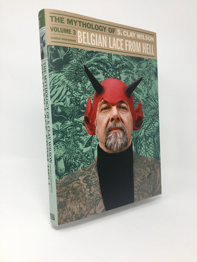 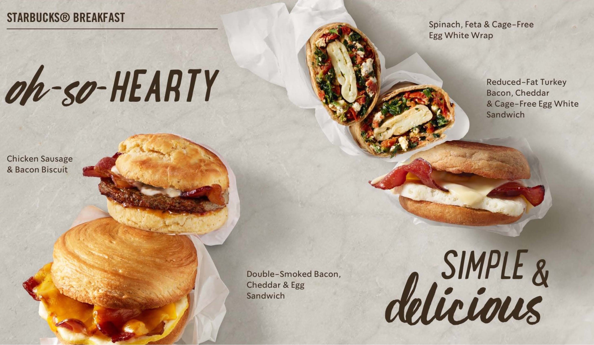
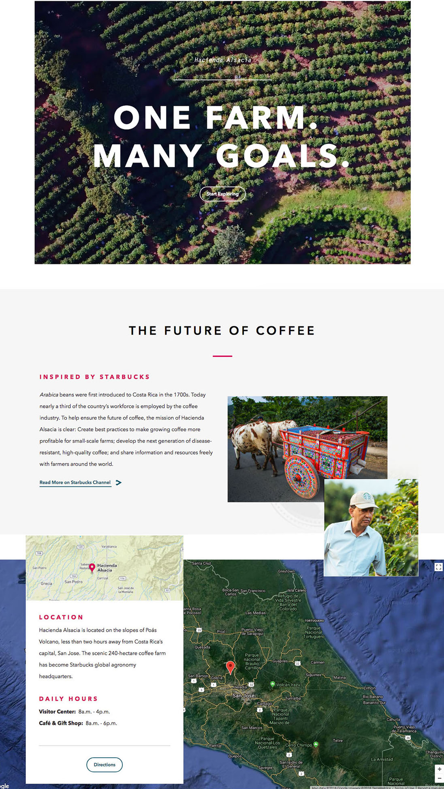
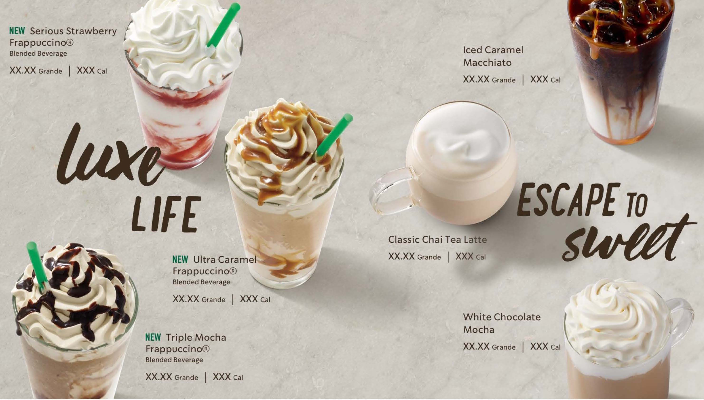
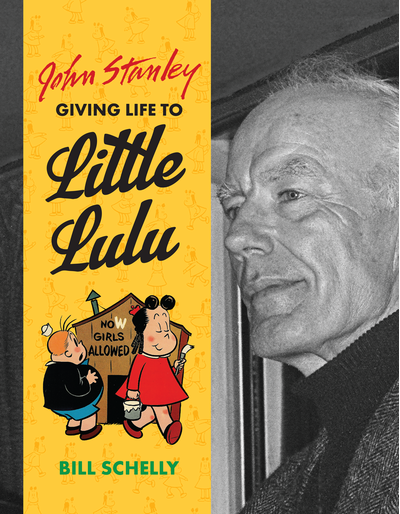
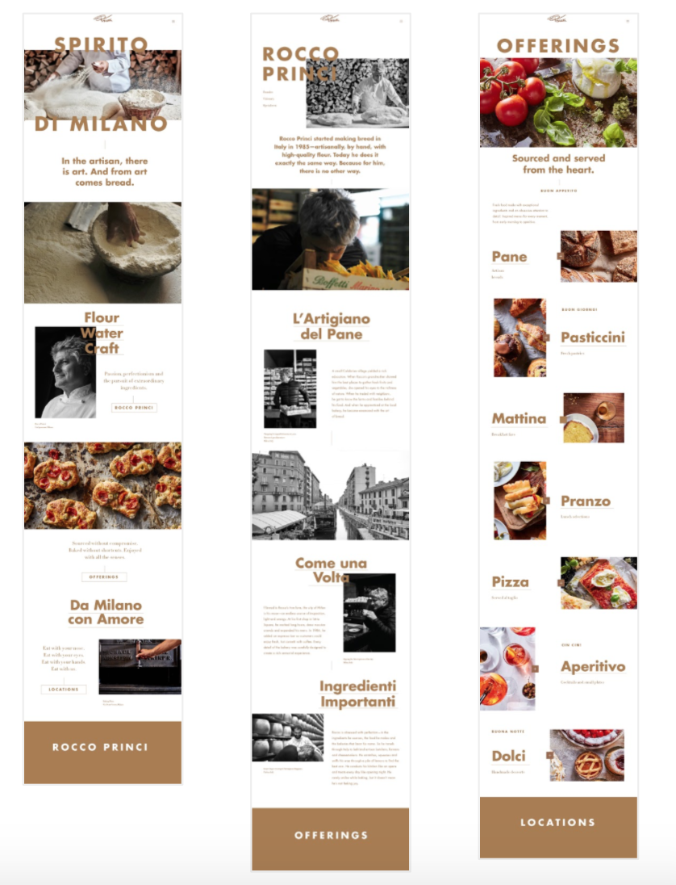
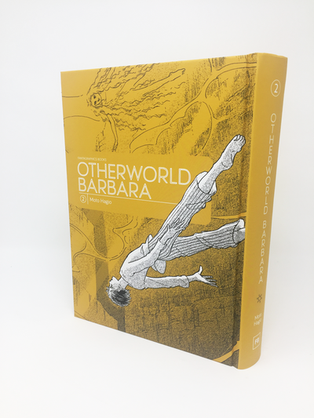
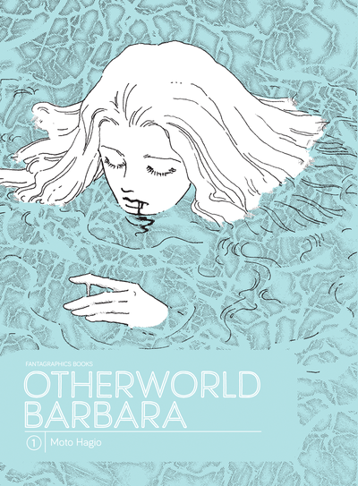
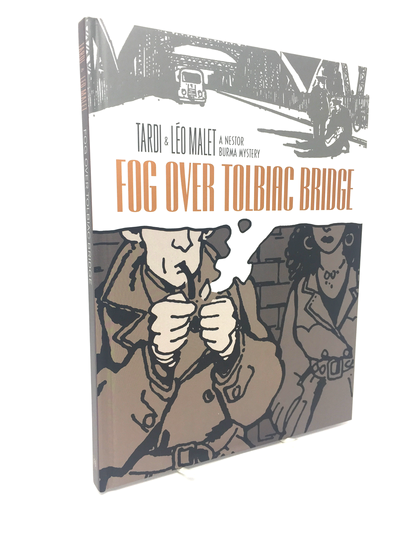
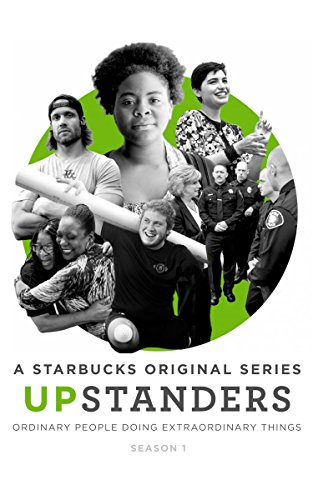
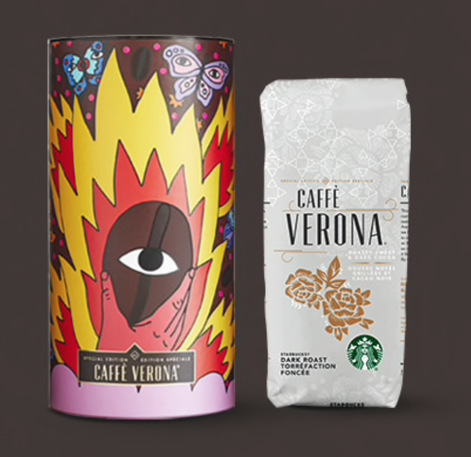
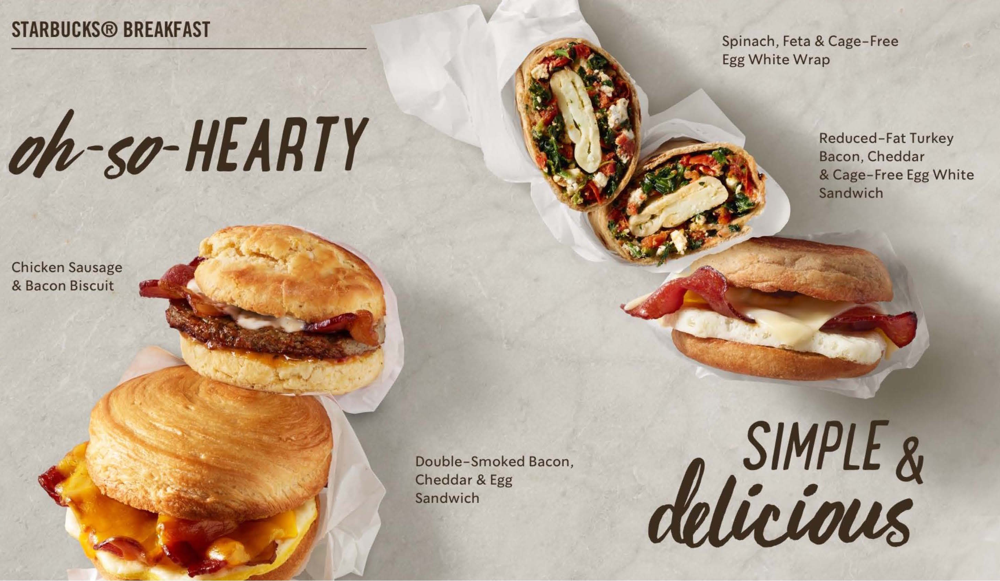
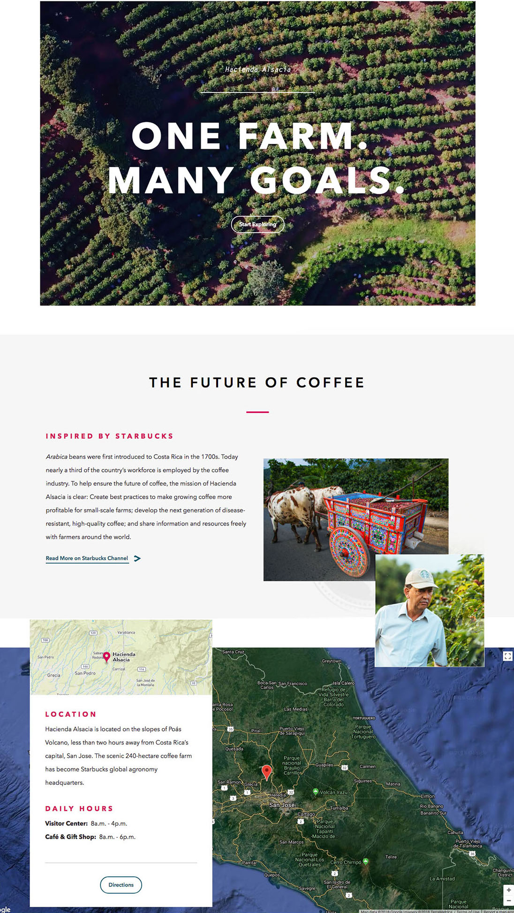
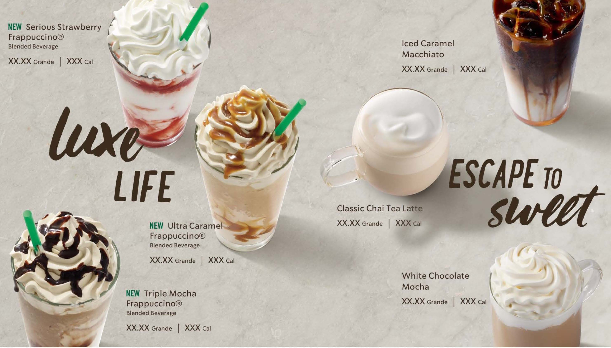
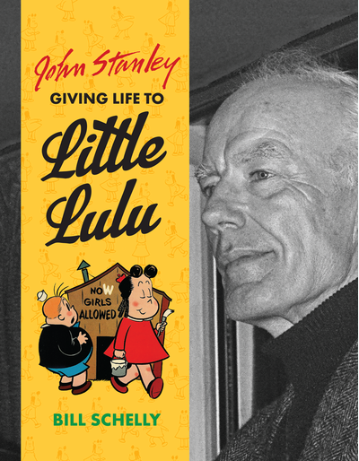
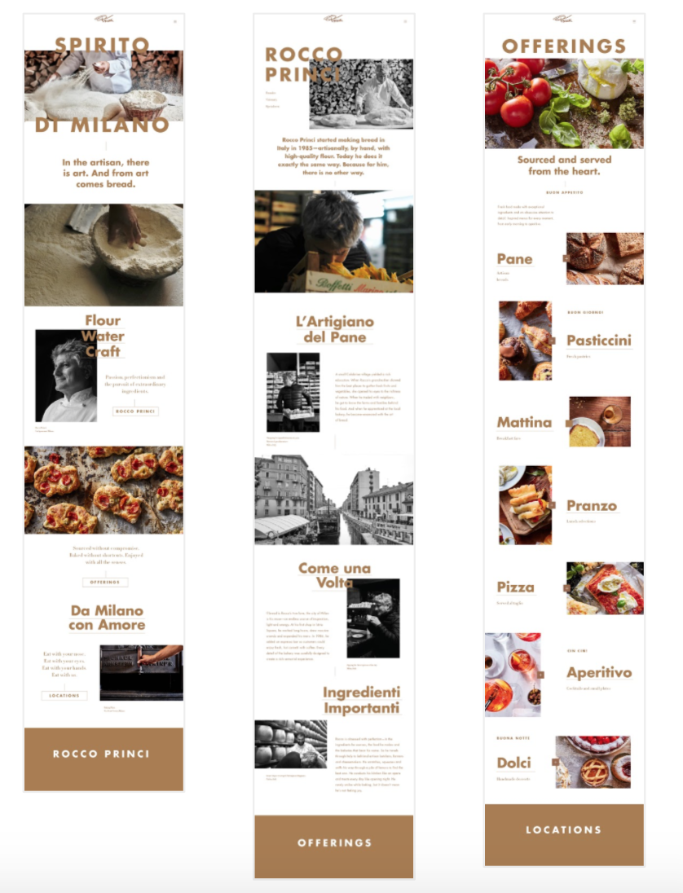
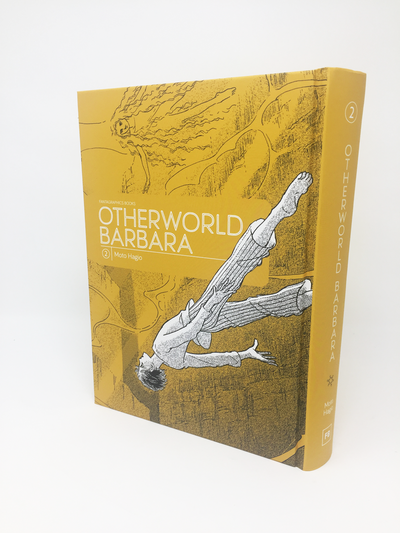
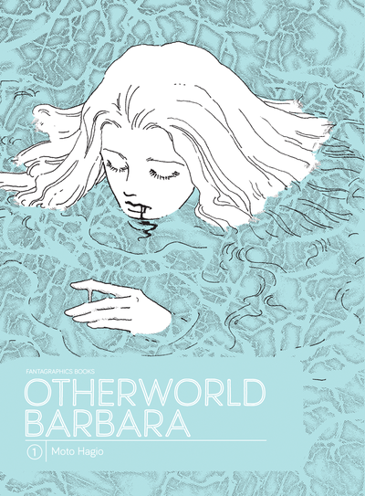
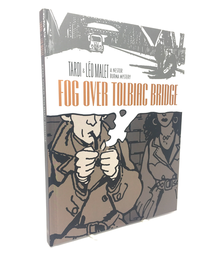
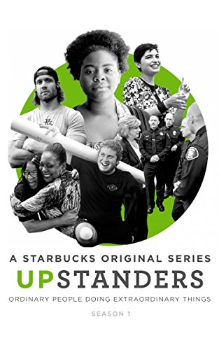
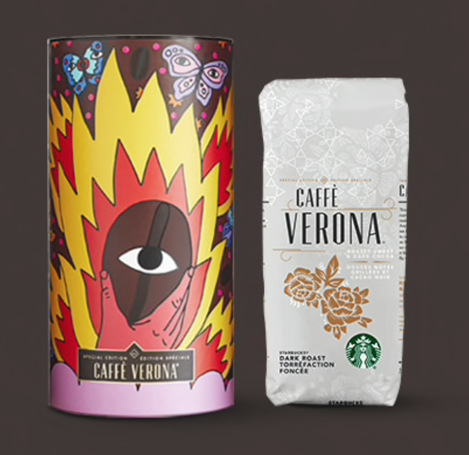
sfrajlich@gmail.com